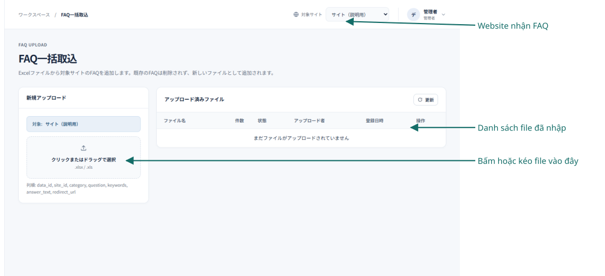
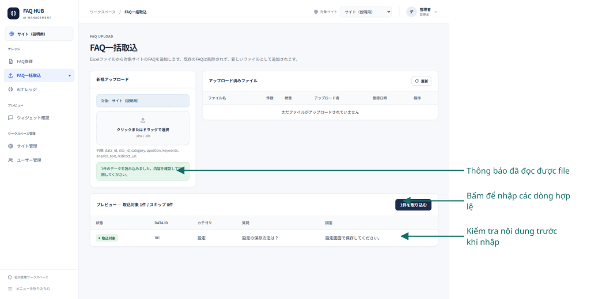
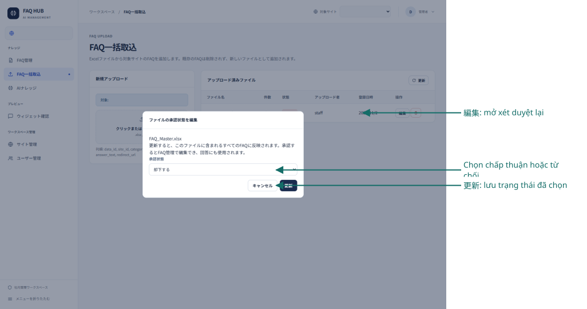

Chuẩn bị file
Màn hình FAQ一括取込 không nhận một bảng Excel tùy ý để tự hiểu nội dung. Mỗi dòng dữ liệu phải có mã FAQ, câu hỏi và đáp án đặt đúng cột quy định.
Chỉ sheet đầu tiên được đọc. Dòng đầu dành cho tiêu đề và luôn bị bỏ qua khi nhập; dữ liệu bắt đầu ở dòng thứ hai. Nếu bỏ dòng tiêu đề, dòng dữ liệu đầu tiên sẽ không được nhập.
| Cột | Nội dung | Yêu cầu |
|---|---|---|
| A · data_id | Mã riêng của FAQ trong website. | Cần có; mỗi dòng một mã. |
| B · site_id | Mã website. | Điền đúng website đang chọn; để trống thì dùng website đang chọn. |
| C · category | Danh mục. | Có thể để trống. |
| D · question | Câu hỏi. | Cần có. |
| E · keywords | Từ khóa. | Có thể để trống. |
| F · answer_text | Đáp án. | Cần có. |
| G · redirect_url | Liên kết xem thêm. | Có thể để trống. |
Ví dụ bố trí một dòng FAQ
Có thể dùng dòng tiêu đề: data_id | site_id | category | question | keywords | answer_text | redirect_url. Dữ liệu minh họa dưới đây chỉ thể hiện cách đặt cột; thay bằng nội dung đã được đơn vị xác nhận.
| A · Mã FAQ | B · Mã website | C · Danh mục | D · Câu hỏi | E · Từ khóa | F · Đáp án | G · Liên kết |
|---|---|---|---|---|---|---|
| FAQ001 | Để trống | Cài đặt | Tôi tìm hướng dẫn cài đặt ở đâu? | cài đặt, hướng dẫn | Điền đáp án đã được đơn vị xác nhận. | Để trống |
“Để trống” nghĩa là ô Excel không có chữ, không nhập nguyên cụm này. Khi B trống, hệ thống dùng website đang chọn. Nếu không dùng danh mục, từ khóa hoặc liên kết, giữ nguyên vị trí các cột đó và để ô trống; không dồn cột D hoặc F sang trái.
Nếu Excel không đúng cách bố trí thì sao?
| Trường hợp | Kết quả hiện tại |
|---|---|
| Chỉ có hai cột “Câu hỏi” và “Đáp án”. | Không được tự ghép vào D/F. Cần chuyển câu hỏi sang D, đáp án sang F và thêm mã ở A. |
| Thiếu mã ở A. | Dòng bị loại ngay khi đọc và có thể không xuất hiện trong danh sách xem trước các dòng bị bỏ qua. |
| A chỉ có khoảng trắng. | Có thể qua bước đọc ban đầu nhưng vẫn bị máy chủ bỏ qua vì mã sau khi bỏ khoảng trắng là rỗng. |
| Thiếu câu hỏi ở D hoặc đáp án ở F. | Dòng bị bỏ qua; không tạo FAQ từ dòng đó. |
| B là mã website khác website đang chọn. | Dòng bị bỏ qua. |
| Đổi tên tiêu đề nhưng dữ liệu vẫn ở đúng vị trí. | Tên tiêu đề không quyết định việc đọc; chương trình vẫn lấy A làm mã, D làm câu hỏi và F làm đáp án. |
| Các cột bị xáo trộn nhưng A, D và F vẫn có chữ. | Có thể bị hiểu sai mà không báo lỗi mẫu. Phải kiểm tra phần xem trước trước khi bấm nhập. |
| Trùng mã hoặc câu hỏi với FAQ của website. | Máy chủ bỏ qua dòng trùng, không ghi đè FAQ đang có. |
| Thông tin ở sheet thứ hai trở đi hoặc cột sau G. | Không được dùng để tạo FAQ trong màn hình này. |
Không cần mọi ô đều có dữ liệu, nhưng các giá trị phải nằm đúng vị trí. Chỉ cần bỏ C, E hoặc G khỏi bố cục là các cột phía sau có thể bị lệch.
Chọn file và xem trước
Chọn website → chọn file .xlsx / .xls → đọc sheet đầu tiên → hiện bản xem trước; chưa lưu database.

Nhập các dòng hợp lệ
Kiểm tra các dòng → …件を取り込む → 同期中… → hiện số dòng nhập / bỏ qua → cập nhật danh sách file.

Dòng trùng được bỏ qua. Nếu nhập lỗi, bản xem trước vẫn được giữ để thử lại.
Dòng nào có thể bị bỏ qua?
Dòng thiếu mã, thiếu câu hỏi/đáp án hoặc thuộc website khác không được nhập theo cách thông thường. Máy chủ cũng kiểm tra trùng mã hoặc câu hỏi; nhập lại không được dùng để ghi đè đáp án đã có.
Duyệt, từ chối hoặc duyệt lại file — quản trị viên
操作 → 編集 → 承認する hoặc 却下する → 更新 → áp dụng cho toàn bộ FAQ trong file.

Staff nhập → chờ duyệt. Admin chấp thuận → được sử dụng; từ chối → giữ dữ liệu nhưng khóa chỉnh sửa FAQ. キャンセル → đóng hộp, không lưu.
Xóa file: kiểm tra tên file → bấm thùng rác → xác nhận. Các FAQ thuộc file đó cũng bị xóa.